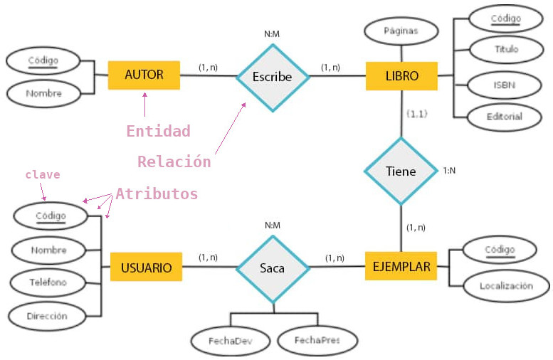
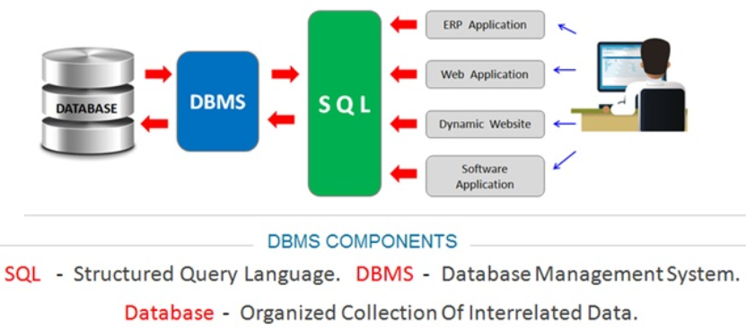

Introducción a las bases de datos relacionales
Base de Datos
Una Base de Datos Relacional:
- Es una colección de datos estructurados en tablas
- Las tablas están relacionadas entre de sí de tal manera que se minimiza
la redundancia e inconsistencia de los datos.
La base de datos es el "almacén de datos" y reside en algún dispositivo de
almacenamiento masivo.
{kind=link}
Diagrama Entidad Relación
El diseño de una BBDD se representa sobre el papel con el Diagrama de Entidad-Relación

Sistema gestor de la Base de Datos
Por otro lado tenemos la aplicación que maneja esos datos, el "Sistema Gestor de Bases de Datos" (SGBD), o DBMS (Data Base Management System).

Algunos de los SGBD relacionales más utilizados son:
- Microsoft Access
- Microsoft SQL Server
- MySQL / MariaDB
- Oracle Database
- Db2 de IBM
- PostgreSQL
- SQLite
Lenguaje SQL
Todos los SGBD relacionales tienen algo en común, que es el lenguaje utilizado para crear las tablas y realizar las consultas a las mismas. Ese lenguaje es el SQL (Structured Queryt Language).
SQL es un estándar publicado por el ANSI en 1986 y es independiente del SGBD utilizado (aunque cada SGBD tiene sus peculiaridades).
Según el tipo de operaciones que se realicen sobre la BBDD suele hablarse de tres "sublenguajes":
- DDL (Data Description Language): Nos permite definir las estructuras que almacenarán los datos (
CREATE,ALTER,DROP), definir las claves (PRIMARY KEY,FOREIGN KEY) e imponer restricciones a los valores de los datos (CONSTRAINT).
- Con el DDL manejamos la parte estática de la BBDD: la estructura, el diseño de la base de datos. - DML (Data Manipulation Language): Nos permite operar con los datos, manipularlos y realizar consultas (
INSERT,UPDATE,DELETE,SELECT).
- Maneja la parte dinámica de la BBDD: los datos contenidos de las tablas. - DCL (Data Control Language): Nos permite controlar los accesos a los objetos de la BBDD concediendo o revocando privilegios (
GRANT,REVOKE). También nos permite controlar el procesamiento de transacciones confirmándolas (COMMIT) o deshaciéndolas (ROLLBACK).
- Maneja los permisos de la BBDD. Es la parte del lenguaje utilizado por el administrador de la BBDD.